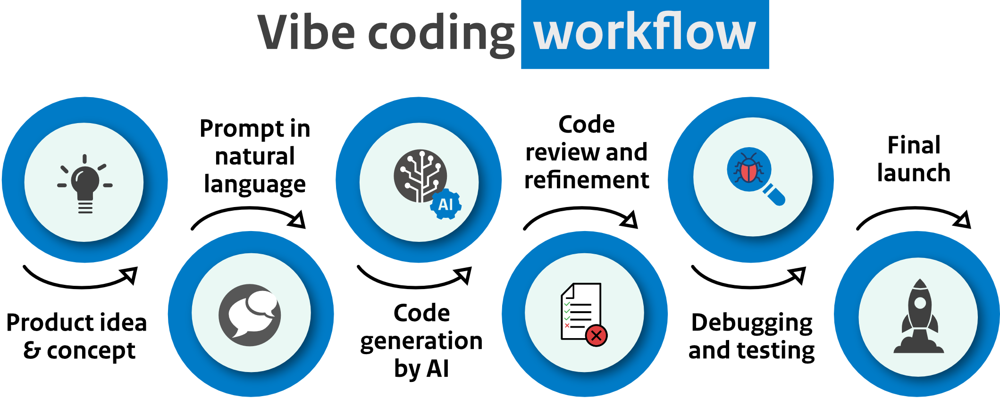
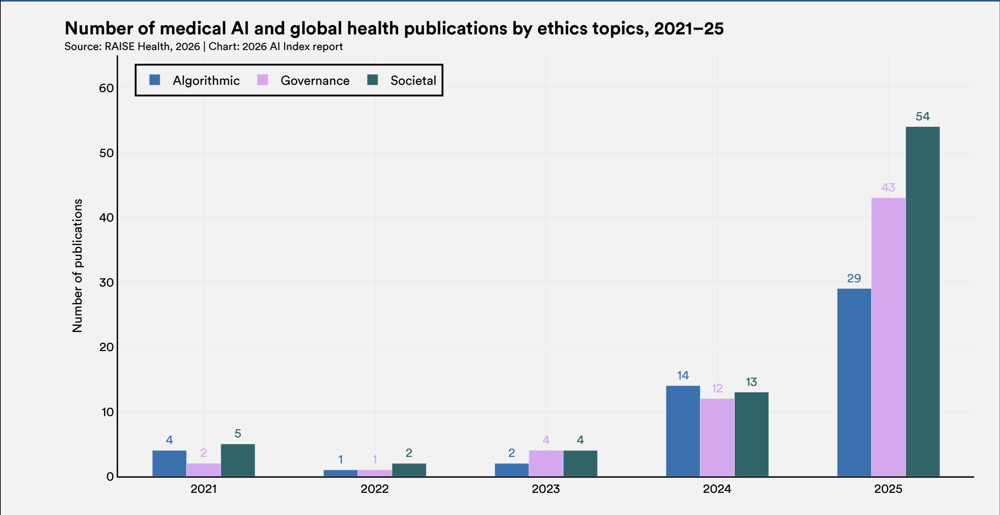
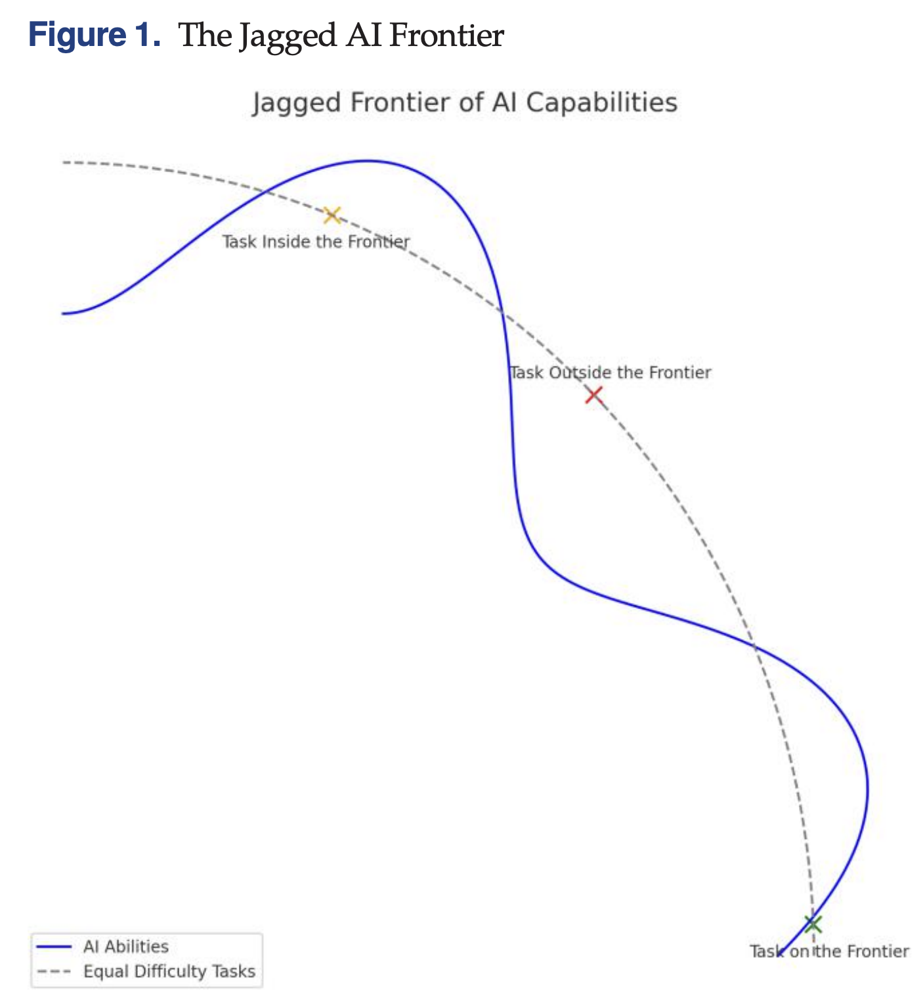
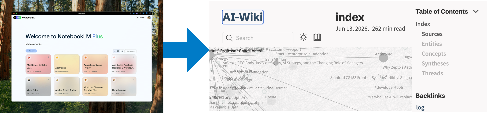
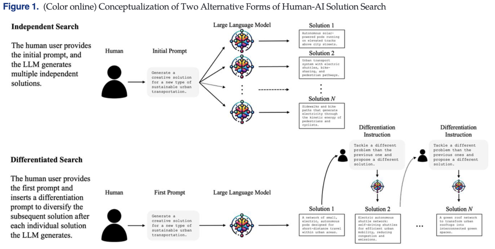
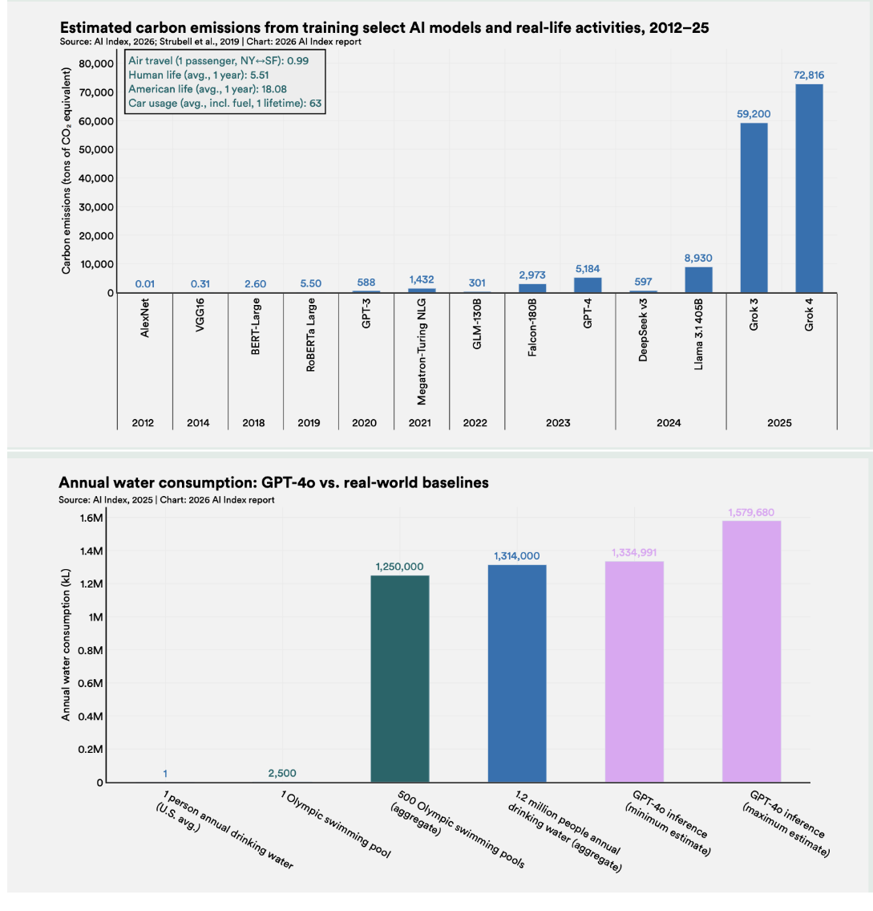

Welcome
Automating deployment pipelines with GitHub Copilot in Visual Studio Code
- Presenter: Robert ten Hove
- Organization: RIVM
- Date: 15 june 2026

Vibe coding workflow

Take into consideration:
References

References

References
Demo checkpoints: Start page, chapter navigation, interactive element, score update.
Module start page: /Users/rtenhove/Documents/05_RIVM/07_TRAININGS/2025 CCHF_PCR/11_MODULE_1/index.html
Website: https://businessdatasolutions.github.io/ai-wiki/

The doctor suspects infection with CCHF virus. In which stage is the patient most likely? Choose the suspeced clinical stage [from three buttons]: - Pre-hemorrhagic stage [correct] - Hemorrhagic stage - Convalescence (recovering) [After clicking one button, the buttons change colour to green for the right button or red from the wrong buttons. ] Plasma sample is send to the laboratory. The next morning the results arrive. What do you expect based on the patient's clinical stage? | Laboratory test | Expected result | Rationale [is made visible after selection] | |---------------------------|-----------------------------------------------|-------------------------------------------------------------------------------------------------------------| | RT PCR | Positive [correct] / Negative / Inconclusive | Viremia peaks in the first week; NAAT is the primary diagnostic tool. | | Viral Antigen (ELISA) | Positive [correct] / Negative / Inconclusive | Antigen is most detectable during high viremia in the first 5 days. | | CCHFV IgM / IgG | Positive / Negative [correct] / Inconclusive | Antibodies are generally not detectable until day 4-7 of symptoms. | | Platelet count | High / Low / Inconclusive [correct] | Declining platelets are observable even in the pre-haemorrhagic phase, BUT cannot be analysed from SERUM. . | | Liver enzymes (AST / ALT) | Elevated [correct] / decreased / Inconclusive | AST and ALT levels rise early due to hepatic involvement. | For each correct selection, the user receives 25 points. If all are correct, the user received a bonus of 50 points.
References

References

Pilot, measure, validate, and then expand in a controlled way.